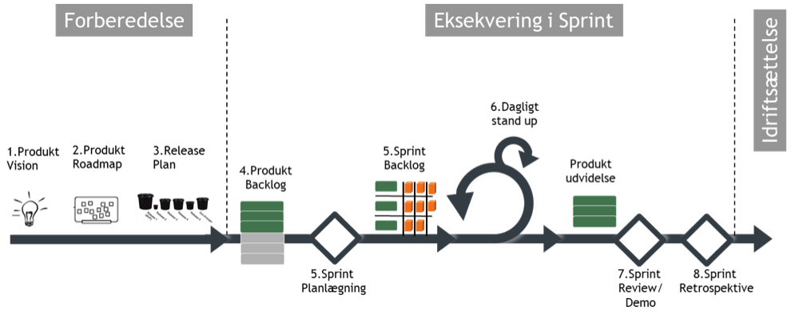

SCRUM
SCRUM er et projekt organiserings værktøj som er udviklet til fleksibel softwareudvikling. Helt grundlæggende går det ud på at opdele et projekt i mange små faser/delmål, som kan ses som små opgaver, som til sammen udgøre hele projektet. De små faser bliver løbende evalueret i hele projektets afsatte tid. Faserne opdeles yderligere, i små detaljerede opgaver, som bør kunne udføres på under 18 timer. Dette kan gøre det muligt at udvikle på mange dele af et komplekst projekt, på samme tid. SCRUM giver samtidig plads til rettelse/ændringer/forbedringer løbende.
Roller i SCRUM
SCRUM ligger op til at folk skal opdeles i specifikke roller, som varetager forskellige dele af projektet og SCRUM organiseringen.
Product Owner
- Holder styr på krav og behov til projektet.
- Godkender løbende arbejdet.
- Evaluere løbende arbejdet.
SCRUM Team
- Kan være forskellige udviklere (backend, frontend, designere, testere osv.)
- Sørger for at imødekomme krav og behov fra Product Owner’en
SCRUM Master
- Neutral facilitator.
- Sørger for at scrum organiseringen overholdes.
- Planlægger alle møder.
- Planlægger agendaen på alle møder.